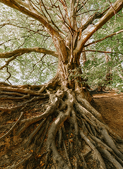
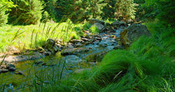
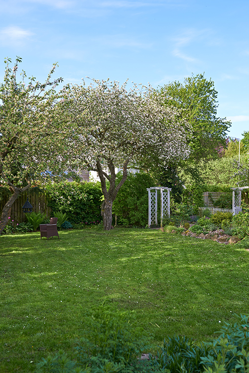

Native plants are more than attractive additions to a landscape. They are part of a living system that has developed over centuries with the local soil, climate, insects, birds, rainfall patterns, and surrounding trees. For homeowners in New Jersey, understanding the science behind native plants can make a big difference in how a yard grows, how trees respond to stress, and how healthy the overall property becomes over time.
For Ben Bivins Tree Experts, tree care is not just about trimming branches or removing hazardous trees. A smart approach to tree service in Monmouth County looks at the full environment around the tree. That includes the plants growing beneath it, the condition of the soil, the availability of water, and the natural balance of the landscape. This is where native plants become an important part of the conversation.
What Makes a Plant Native?
A native plant is one that naturally occurs in a specific region without being introduced by people. In Monmouth County and other parts of New Jersey, native plants have adapted to local conditions over a long period of time. They are used to the area’s seasonal changes, common soil types, rainfall levels, insects, and wildlife.
That matters because plants and trees do not grow in isolation. Their roots, leaves, flowers, and fallen organic matter all interact with the surrounding ecosystem. A native plant is often better equipped to support that ecosystem than a non-native ornamental plant that may look attractive but offer little benefit to local wildlife or soil health.
Native Plants Support Tree Health from the Ground Up

Healthy trees begin with healthy soil. The area beneath and around a tree is not empty space. It is a busy underground network of roots, fungi, microbes, insects, and organic matter. Native plants can help protect this network.When native groundcovers, shrubs, and perennials are planted near trees, they can help reduce soil erosion, shade the soil surface, and improve moisture retention. Their roots also help keep soil structure intact. This is especially important in yards where turf grass grows right up to the trunk of a tree. Grass often competes with tree roots for water and nutrients, and mowing too close to a tree can damage bark and surface roots.
A more natural planting area around a tree can reduce stress on the root zone. Less stress often means better growth, stronger resistance to pests, and improved long-term stability.
The Science of Biodiversity
Biodiversity refers to the variety of living things in an environment. A landscape with only lawn and a few ornamental plants may look neat, but it often provides limited ecological value. A yard with native plants, mature trees, pollinator-friendly flowers, and healthy soil creates a more balanced system.
This matters for tree care because pests and diseases tend to become more problematic when landscapes are out of balance. A diverse yard can attract beneficial insects, birds, and organisms that help keep damaging pest populations in check. While native plants cannot prevent every tree problem, they can contribute to a healthier environment where trees are less likely to struggle from repeated stress.
In simple terms, a stronger ecosystem gives trees a better chance to thrive.
Native Plants and Water Management

Water plays a major role in tree health. Too little water can weaken a tree, while too much water can suffocate roots and encourage disease. Native plants can help manage water more naturally because many have deep or well-adapted root systems that improve how water moves through soil.
In areas of Monmouth County where heavy rain can lead to runoff, native plantings can help slow water down and allow more of it to soak into the ground. This can benefit nearby trees by improving soil moisture without creating soggy, compacted conditions.
For homeowners, this means native plants can be part of a practical landscape strategy. They can make a yard more resilient during dry spells, heavy storms, and seasonal weather changes.
Why Tree Experts Look Beyond the Tree Itself
When a tree shows signs of decline, the cause is not always obvious. Dead branches, thinning leaves, weak growth, and pest activity may all be symptoms of a larger problem. Sometimes the issue is poor soil, root damage, construction disturbance, drainage trouble, or competition from surrounding plants.
As a professional tree service in Monmouth County, Ben Bivins Tree Experts observe and understand how local landscapes behave and how environmental conditions affect tree health. The right solution may involve pruning, removal, hazard assessment, or plant health recommendations. In some cases, improving the area around the tree can be just as important as working on the tree itself.
Native plants fit into this bigger picture because they help create a landscape that works with nature rather than against it.
Choosing Native Plants around Trees
Not every native plant belongs under every tree. Light levels, soil moisture, root competition, and mature plant size all matter. For example, a shady area beneath a large tree needs plants that tolerate lower light. A sunnier edge of the yard may support different native flowers or shrubs.
Homeowners should also be careful not to pile soil or mulch too high around tree trunks when adding new plants. Tree roots need oxygen, and trunks should not be buried. A common mistake is creating a raised planting bed directly over a tree’s root zone, which can cause long-term damage.
A better approach is to work gently around existing roots, choose appropriate plants, and keep mulch pulled back from the trunk. This protects the tree while improving the surrounding landscape.
Native Plants Can Reduce Maintenance Pressure
One reason homeowners like native plants is that they often require less long-term maintenance once established. Because they are adapted to local conditions, many native species need less watering, less fertilizer, and fewer chemical treatments than plants that are poorly suited to the region.
This does not mean native plants are maintenance free. They still need proper placement, watering while they establish, and occasional care. However, they can help create a yard that is less dependent on constant intervention.
For tree care, that reduced pressure matters. A landscape that needs less aggressive watering, less soil disturbance, and fewer chemical inputs can be better for the trees growing within it.

A Healthier Yard Starts With Tree Service in Monmouth County
The science behind native plants is really the science of relationships. Trees relate to soil. Soil relates to microbes. Plants relate to insects. Insects relate to birds. Water, sunlight, roots, and organic matter all play a role. When those relationships are supported, a yard becomes healthier and more resilient. When they are ignored, trees may face unnecessary stress.
Ben Bivins Tree Experts understands that professional tree care is about more than cutting limbs. It is about recognizing how trees fit into the landscape and helping property owners make decisions that protect both safety and long-term health.
For homeowners who care about stronger trees, healthier yards, and landscapes that feel more connected to New Jersey’s natural environment, native plants are a smart place to start.